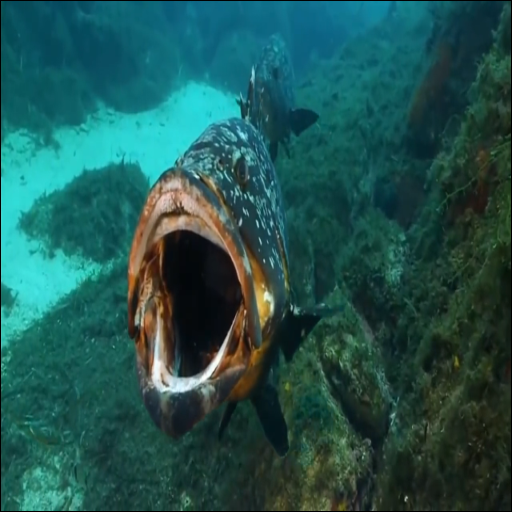
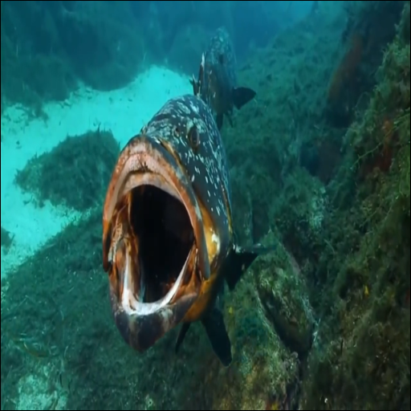
Single-Step Latent Diffusion for Underwater Image Restoration
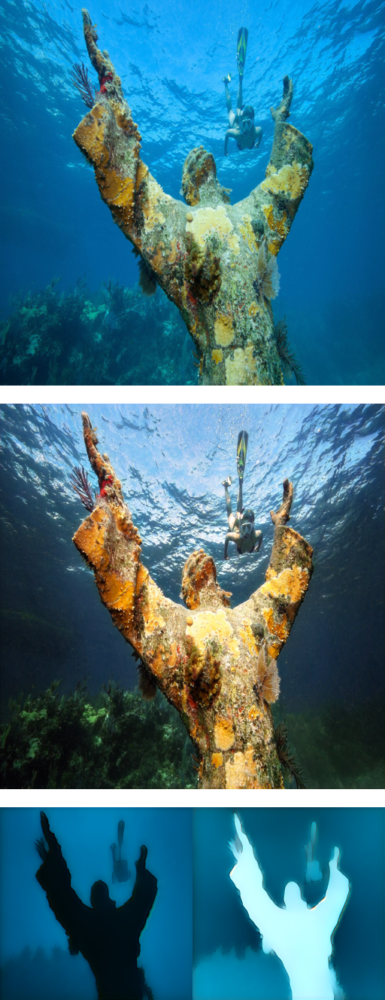
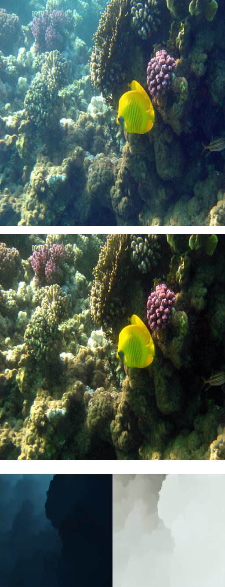
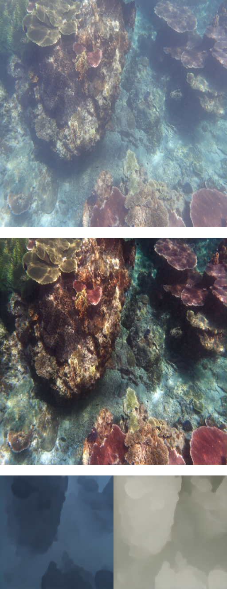
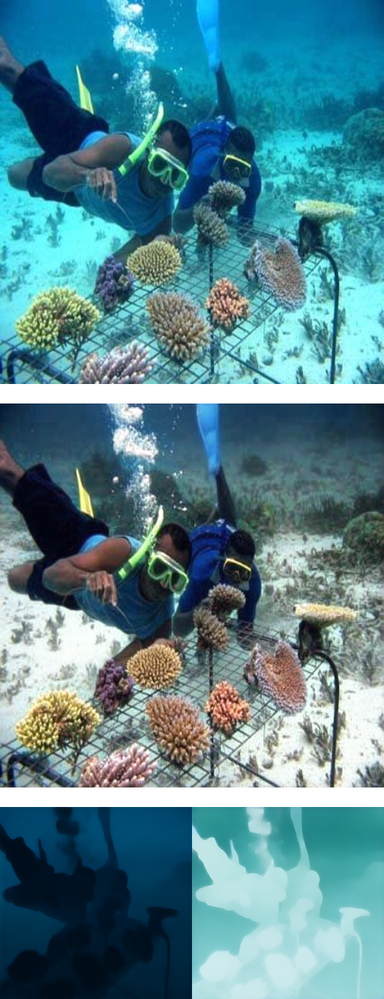
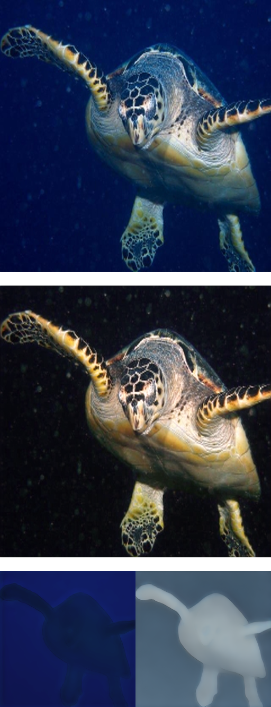
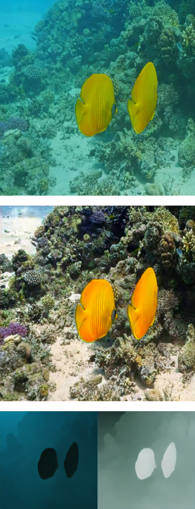
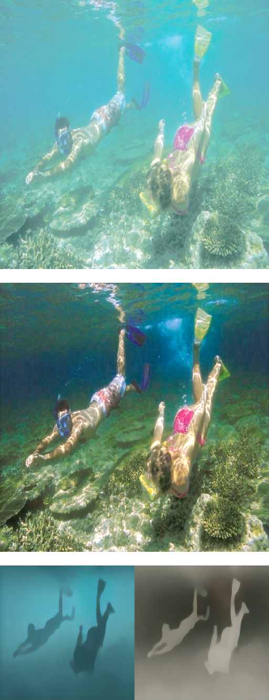
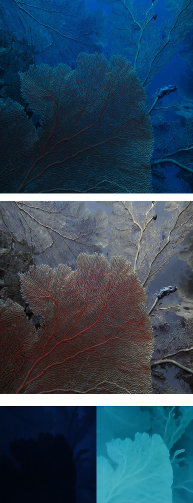
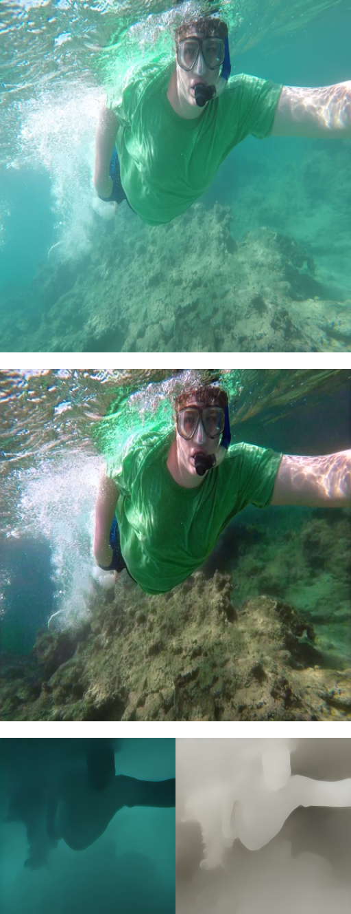
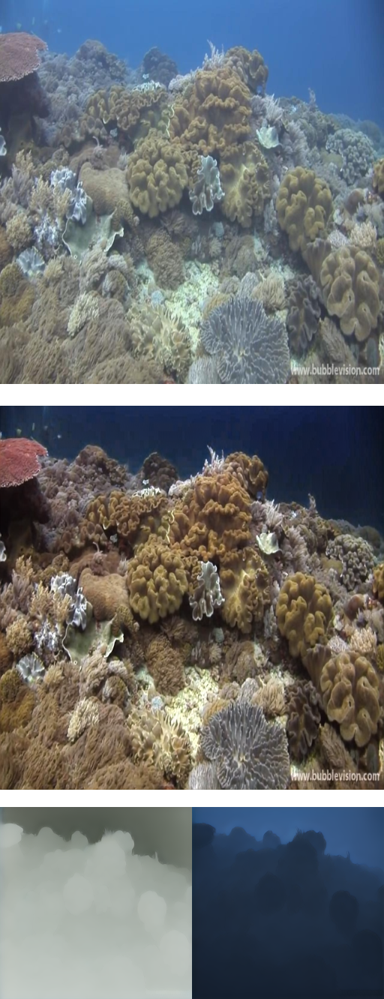
Overview
Underwater image restoration aims to recover color, contrast, and appearance in underwater scenes, crucial for fields like marine ecology and archaeology. While pixel-domain diffusion methods work for simple scenes, they are computationally heavy and produce artifacts in complex, depth-varying scenes.
We present a single-step latent diffusion method, SLURPP (Single-step Latent Underwater Restoration with Pretrained Priors), that overcomes these limitations by combining a novel network architecture with an accurate synthetic data generation pipeline.
SLURPP combines pretrained latent diffusion models—which encode strong priors on the geometry and depth of scenes—with an explicit scene decomposition—which allows one to model and account for the effects of light attenuation and backscattering.
To train SLURPP we design a physics-based underwater image synthesis pipeline that applies varied and realistic underwater degradation effects to existing terrestrial image datasets.
We evaluate our method extensively on both synthetic and real-world benchmarks and demonstrate state-of-the-art performance.
Comparing Restoration Results Between Methods
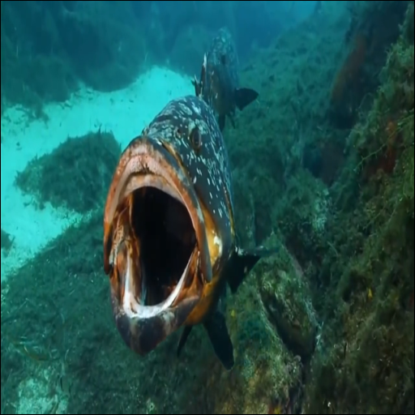
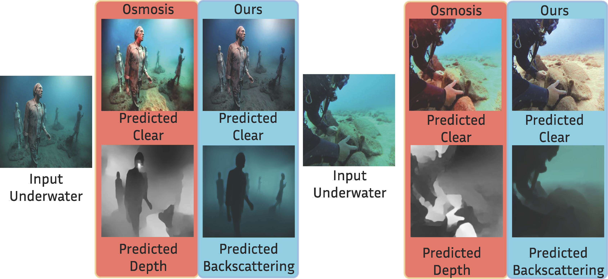
In this figure we show the predicted clear image and medium-related parameters for our method (backscattering) and Osmosis (depth). In the medium visualization of both methods, objects in the foreground have lower depth/backscattering, while background objects have higher depth/backscattering. Osmosis highly depends on accurate depth estimation, incorrect depth (such as the diver's face region in the right image) leads to unrealistic restoration with spurious color artifacts. Our scene-medium separation formulation leverages depth priors indirectly through water medium prediction, and we obtain much better quality predictions for both clear restoration and depth-dependent medium parameters.
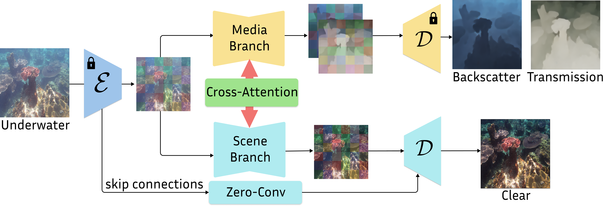
We use a dual-branch latent diffusion network to jointly predict the clear image and water medium parameters in a single inference step.
The Scene Branch predicts the restored clear image is fine tuned from a text-to-image diffusion model. The cross-latent decoder is used to transfer fine details from the input image to the restored image through encoder skip connections to the decoder.
The Medium Branch predicts the water medium parameters, including the attenuation and backscattering coefficients. Due to the strong correlation of medium effects with the scene depth, the medium branch is fine-tuned from a diffusion-based monocular depth model (Marigold).
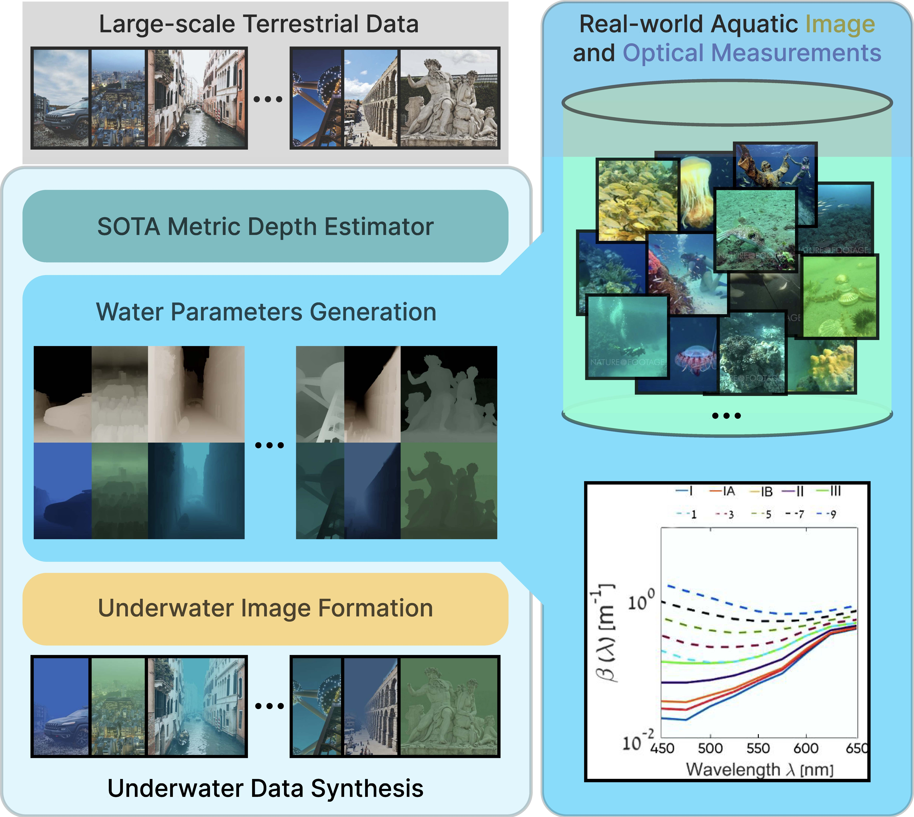
To train the model, we use a physics-based underwater image synthesis pipeline to generate realistic underwater images with diverse medium parameters. We use a large and diverse set of terrestrial images as the base dataset, and apply realistic underwater degradation effects to generate synthetic underwater images. We sample attenuation values based on real-world water measurements, and source diverse, realistic background light estimated from real-world underwater images.
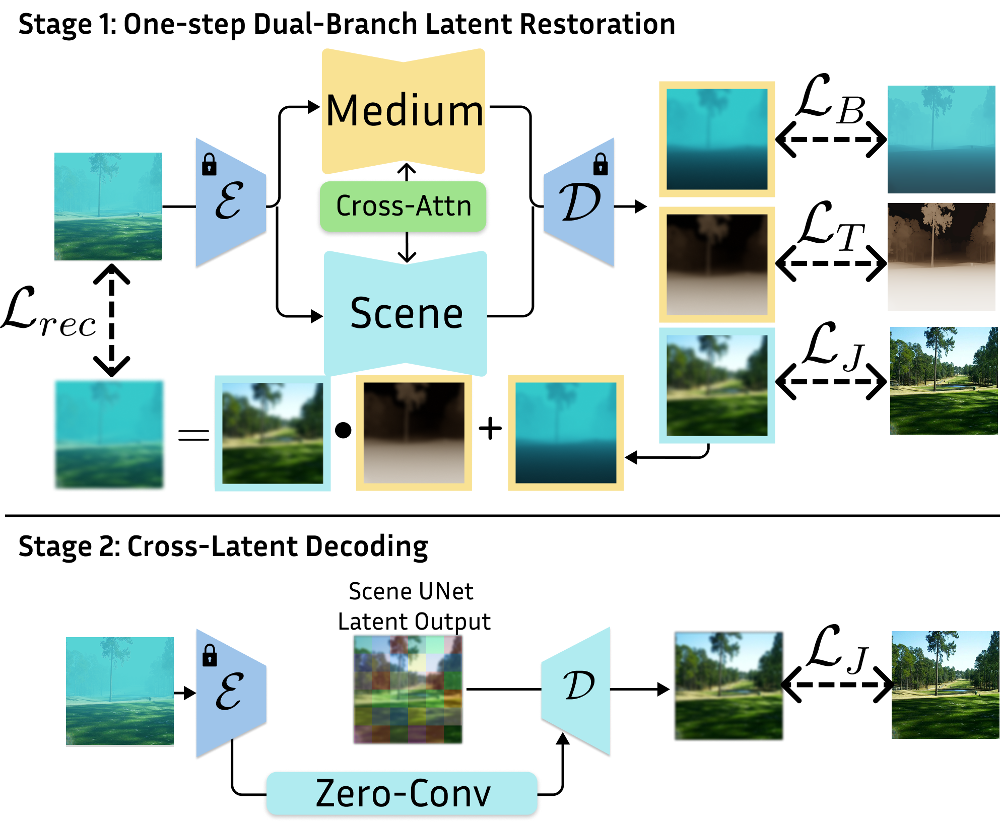
We train our model in two stages. In our first stage, we train our dual-branch UNets with inter-branch cross-attention to directly predict the latent images of the clear scene, as well as medium transmission and backscattering. The latent outputs are decoded and supervised with their respective ground truths using image losses. We also use the reconstruction loss to guide the predicted outputs to respect the underwater image formation model. For stage 2 cross-latent decoding, we fine-tune the decoder and additional zero convolution skip connections to transfer high-frequency details from the input underwater image to the restored image.
Video Results
We test our method on the MVK underwater dataset, which contains a diverse set of underwater videos under different aquatic conditions.